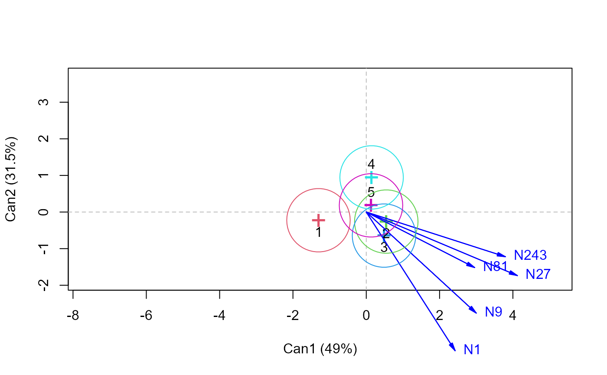
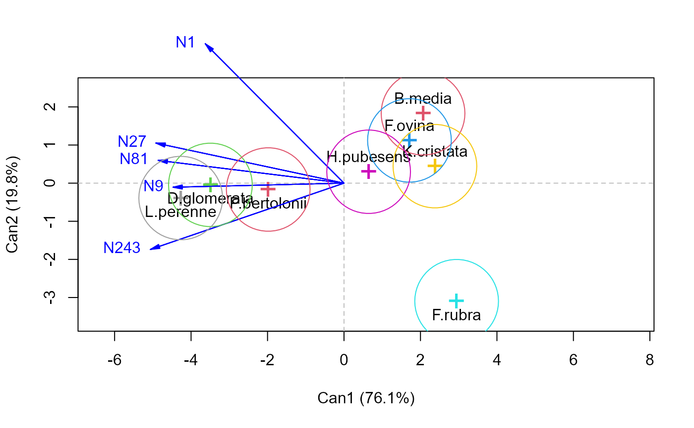

candiscList performs a generalized canonical discriminant analysis
for all terms in a multivariate linear model (i.e., an mlm object),
computing canonical scores and vectors.
Usage
candiscList(mod, ...)
# S3 method for class 'mlm'
candiscList(mod, type = "2", manova, ndim, ...)
# S3 method for class 'candiscList'
print(x, ...)
# S3 method for class 'candiscList'
summary(object, ...)
# S3 method for class 'candiscList'
plot(x, term, ask = interactive(), graphics = TRUE, ...)Arguments
- mod
An mlm object, such as computed by lm() with a multivariate response
- ...
arguments to be passed down.
- type
type of test for the model
term, one of: "II", "III", "2", or "3"- manova
the
Anova.mlmobject corresponding tomod. Normally, this is computed internally byAnova(mod)- ndim
Number of dimensions to store in the
means,structure,scoresandcoeffs.*components. The default is the rank of the H matrix for the hypothesis term.- object, x
A candiscList object
- term
The name of one term to be plotted for the
plotmethod. If not specified, one candisc plot is produced for each term in themlmobject.- ask
If
TRUE(the default, when running interactively), a menu of terms is presented; if ask is FALSE, canonical plots for all terms are produced.- graphics
if
TRUE(the default, when running interactively), then the menu of terms to plot is presented in a dialog box rather than as a text menu.
Examples
grass.mod <- lm(cbind(N1,N9,N27,N81,N243) ~ Block + Species, data=Grass)
grass.canL <-candiscList(grass.mod)
names(grass.canL)
#> [1] "Block" "Species"
names(grass.canL$Species)
#> [1] "dfh" "dfe" "eigenvalues" "canrsq" "pct"
#> [6] "rank" "ndim" "means" "factors" "term"
#> [11] "terms" "coeffs.raw" "coeffs.std" "structure" "scores"
if (FALSE) { # \dontrun{
print(grass.canL)
} # }
plot(grass.canL, type="n", ask=FALSE)
#> Vector scale factor set to 4.527

#> Vector scale factor set to 5.545

heplot(grass.canL$Species, scale=6)
heplot(grass.canL$Block, scale=2)